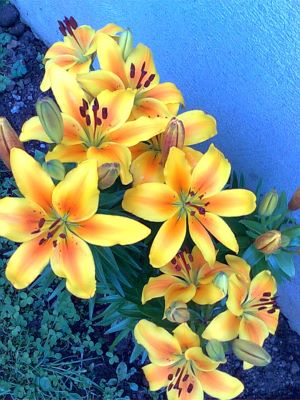

Perenials
If you grow lots of annual flowers, you are familiar with the annual chores necessary to maintain such beds: you purchase flower seedlings (or start your own), and plant them. You nurture them throughout the growing season, fertilize and water them; then, when the season's over and the plants die, you pull them out. Next year, the cycle begins anew. Perennial plants remain in the ground year after year. Once established, many perennials need minimal upkeep in the form of watering and fertilizing, since their roots are more far-ranging than annual plants’ roots. Many perennials spread readily, filling out garden spaces and providing more and more color each year.
Discover more about Perenials Here